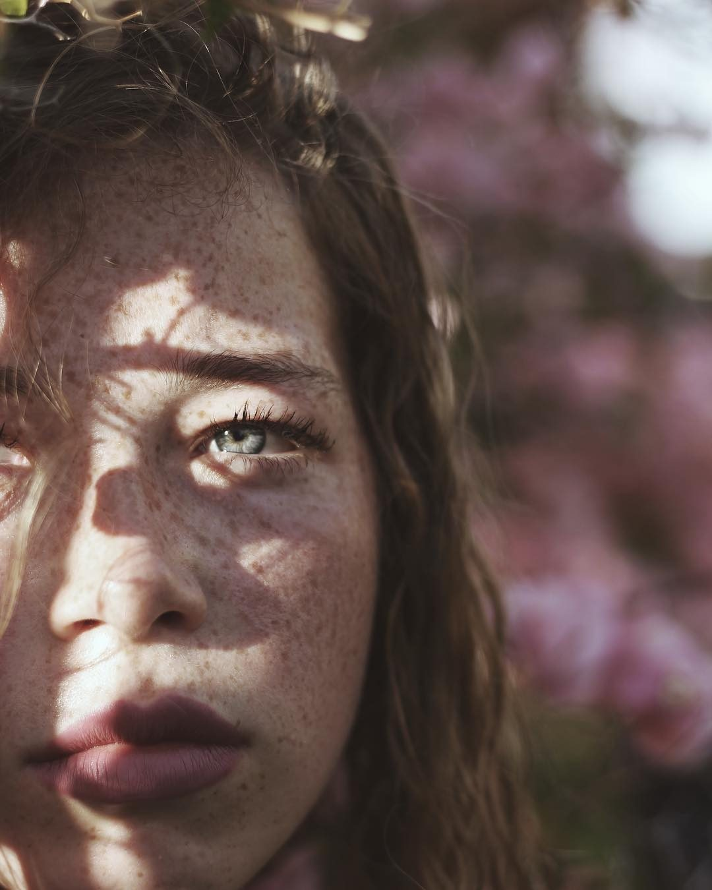
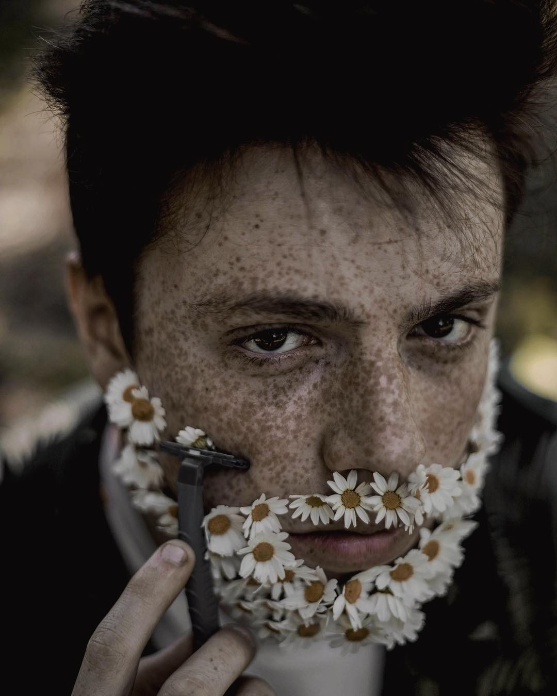
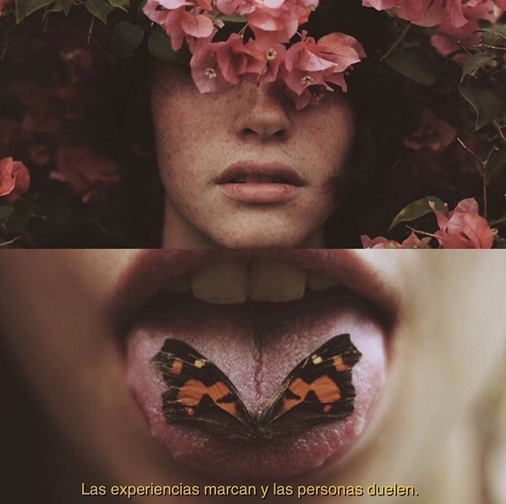
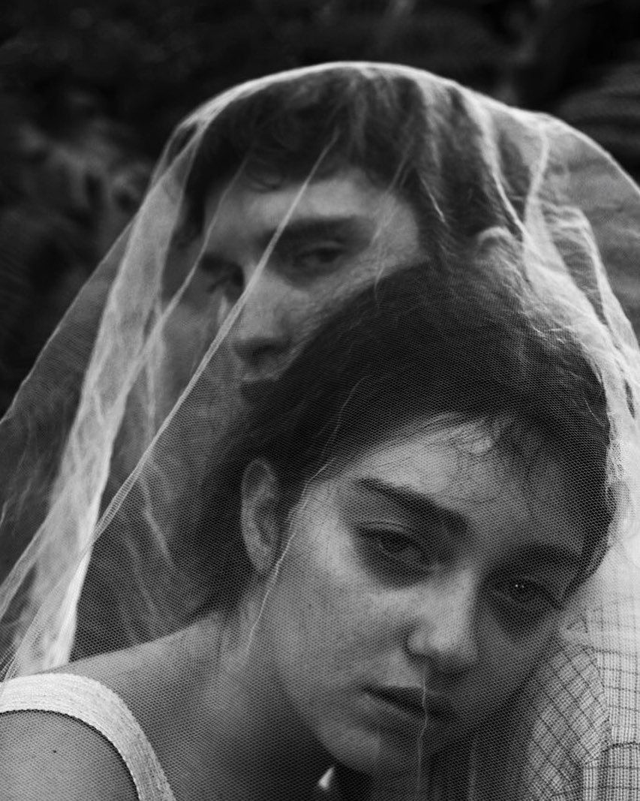
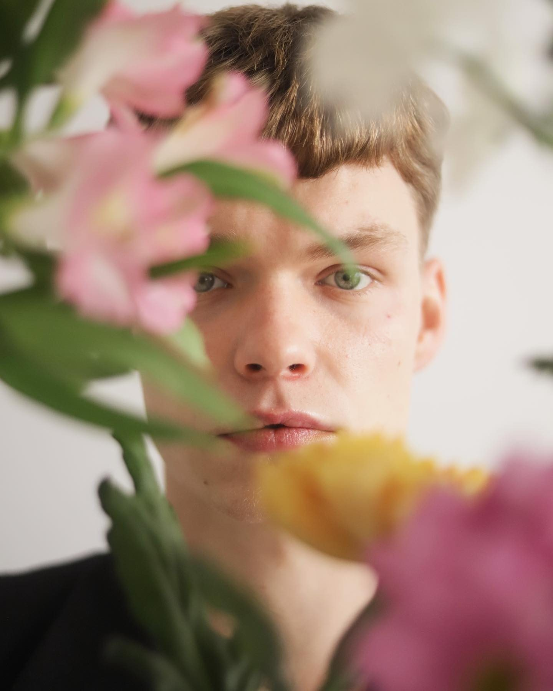
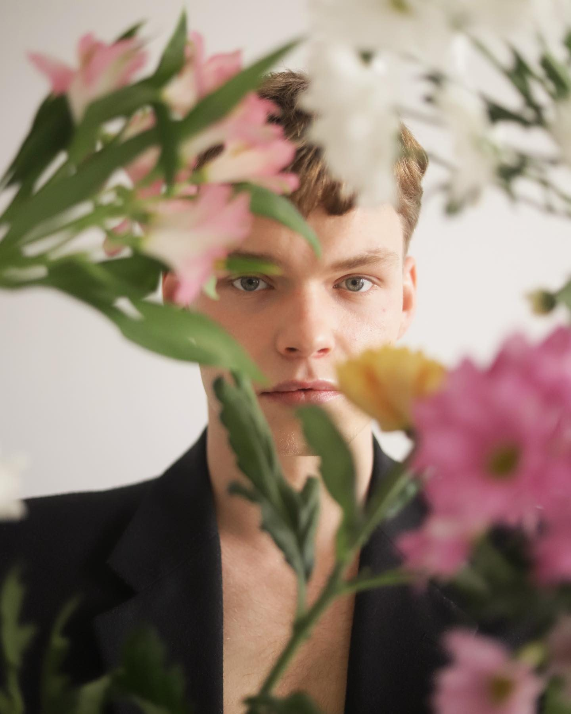
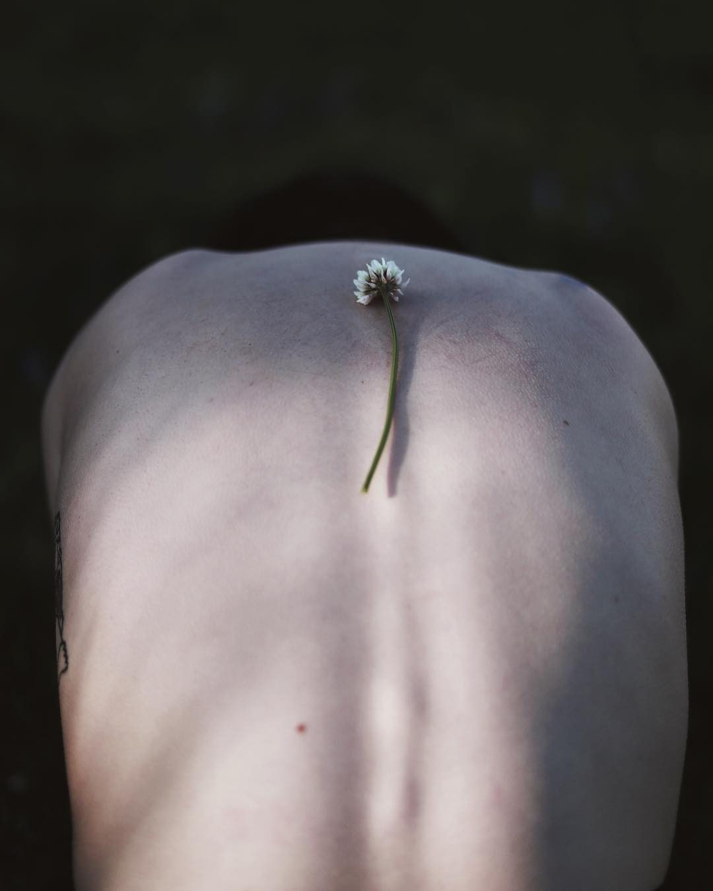
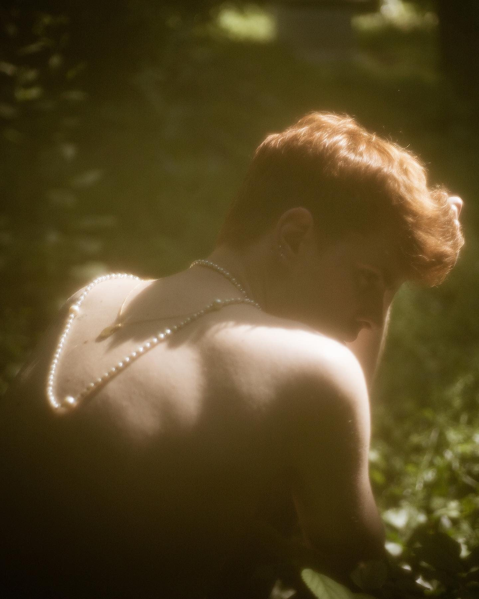
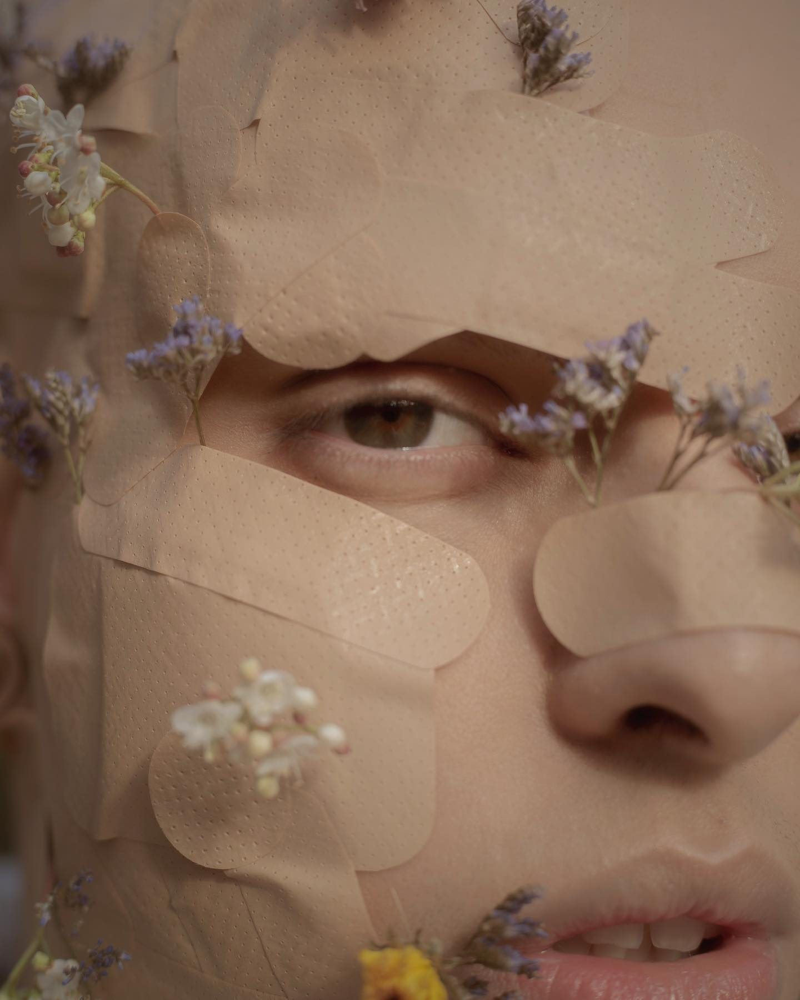
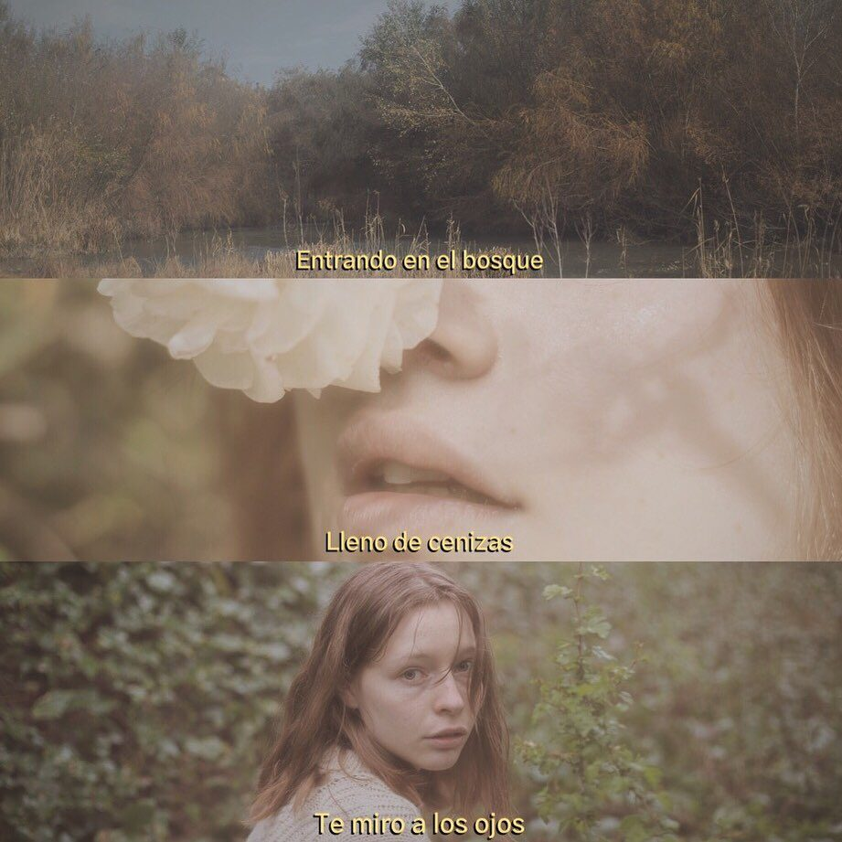

Tony Nieve
Concepto
Proyecto fotográfico personal, iniciado en 2016 y construido desde entonces. Retratos hechos desde una mirada naturalista, donde la imagen no se queda en lo estético: cuenta algo.
Fotografía y dirección de arte. Retrato, color y composición.











El proyecto
Hay algo de cuento de hadas en estas imágenes, y también de melancolía. Cada fotografía levanta un pequeño universo —una luz, un gesto, un personaje— y confía en que el relato aparezca ahí, sin subrayarlo. Aunque nace como proyecto personal, su lenguaje se traslada con naturalidad a la moda, lo editorial y la dirección artística.
Siguiente proyecto